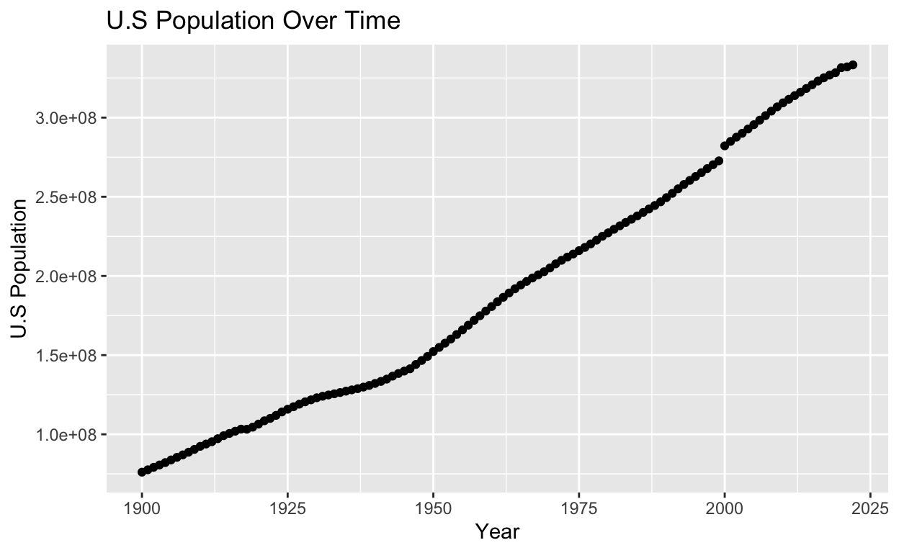
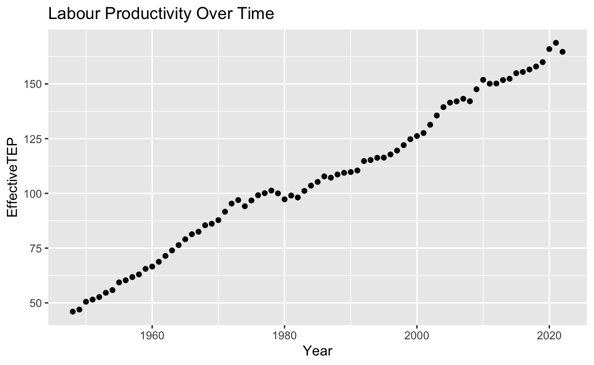
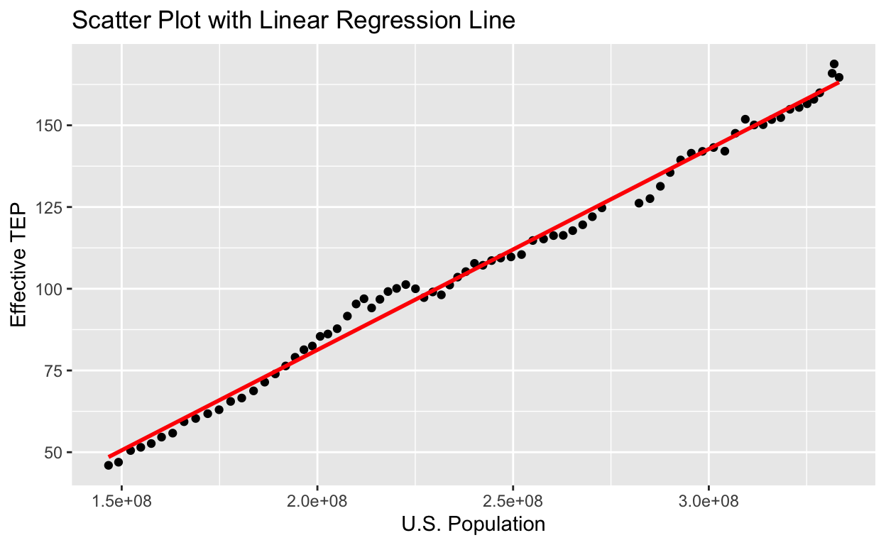

My final project
Does U.S population correlate to the U.S labor productivity? If yes how significant is that correlation? In this project I plan to examine the extent to which population numbers in the United States of America correlate to the labor productivity of the country. I hypothesize that the correlation between the two variables will be positive and highly significant. The big idea behind my hypothesis is that an increase in population results in an increased labor supply, more people with greater skills and talent, increased consumer demand, entrepreneurship and innovation, all things that positively affect labor productivity. Due to the limitations for these types of studies and the limited access to data to more data, I cant prove causation but I can prove correlation which is what I will be doing. Understanding the relationship between population size and labor productivity can result in better economic policy decision. It has effects on workforce planning as well since it can help organizations,anticipate and adapt to shifts in productivity. Understanding how changes in population size may affect productivity can provide more information in discussions for social well being as labor productivity is a key determined of living standards.
Credits: My data for the the US population numbers through out many years comes from “https://usafacts.org/data/topics/people-society/population-and-demographics/population-data/population/”. My data for labur productivety throughout the years comes from “https://www.epi.org/productivity-pay-gap/#:~:text=From%201979%20to%202020%2C%20net,(after%20adjusting%20for%20inflation).”.
Since I am observing already existing data on U.S Population and Labor Productivity without manipulating the variables but simply looking at their relationship and how much their correlate with each other my study is just an observational study (due to this being an observational study it can’t establish causation but it can prove some level of correlation which is what I will be focusing on). Since we are not looking at the effects of one variable to another but rather the extent to which two variables change together we do not have an explanatory variable and an outcome variable in this study.
Year Uspop
1 1900 76094000
2 1901 77584000
3 1902 79163000
4 1903 80632000
5 1904 82166000
6 1905 83822000
7 1906 85450000
8 1907 87008000
9 1908 88710000
10 1909 90490000
11 1910 92407000
12 1911 93863000
13 1912 95335000
14 1913 97225000
15 1914 99111000
16 1915 100546000
17 1916 101961000
18 1917 103268000
19 1918 103208000
20 1919 104514000
21 1920 106461000
22 1921 108538000
23 1922 110049000
24 1923 111947000
25 1924 114109000
26 1925 115829000
27 1926 117397000
28 1927 119035000
29 1928 120509000
30 1929 121767000
31 1930 123076741
32 1931 124039648
33 1932 124840471
34 1933 125578763
35 1934 126373773
36 1935 127250232
37 1936 128053180
38 1937 128824829
39 1938 129824939
40 1939 130879718
41 1940 132122446
42 1941 133402471
43 1942 134859553
44 1943 136739353
45 1944 138397345
46 1945 139928165
47 1946 141388566
48 1947 144126071
49 1948 146631302
50 1949 149188130
51 1950 152271417
52 1951 154877889
53 1952 157552740
54 1953 160184192
55 1954 163025854
56 1955 165931202
57 1956 168903031
58 1957 171984130
59 1958 174881904
60 1959 177829628
61 1960 180671158
62 1961 183691481
63 1962 186537737
64 1963 189241798
65 1964 191888791
66 1965 194302963
67 1966 196560338
68 1967 198712056
69 1968 200706052
70 1969 202676946
71 1970 205052174
72 1971 207660677
73 1972 209896021
74 1973 211908788
75 1974 213853928
76 1975 215973199
77 1976 218035164
78 1977 220239425
79 1978 222584545
80 1979 225055487
81 1980 227224681
82 1981 229465714
83 1982 231664458
84 1983 233791994
85 1984 235824902
86 1985 237923795
87 1986 240132887
88 1987 242288918
89 1988 244498982
90 1989 246819230
91 1990 249464396
92 1991 252153092
93 1992 255029699
94 1993 257782608
95 1994 260327021
96 1995 262803276
97 1996 265228572
98 1997 267783607
99 1998 270248003
100 1999 272690813
101 2000 282162411
102 2001 284968955
103 2002 287625193
104 2003 290107933
105 2004 292805298
106 2005 295516599
107 2006 298379912
108 2007 301231207
109 2008 304093966
110 2009 306771529
111 2010 309327143
112 2011 311583481
113 2012 313877662
114 2013 316059947
115 2014 318386329
116 2015 320738994
117 2016 323071755
118 2017 325122128
119 2018 326838199
120 2019 328329953
121 2020 331511512
122 2021 332031554
123 2022 333287557library(ggplot2)
ggplot(Book10, aes(x = Year, y = Uspop)) +
geom_point() +
labs(x = "Year", y = "U.S Population") +
ggtitle("U.S Population Over Time")
My date is taken from USA Facts which took the data from the Census Bureau the government agency in charge of counting the entire US population. The data set presented in the table and the graph above is the data that shows the U.S population throughout the years. As shown by the graph above the data points are clustered in a way that forms a trend line with a constant positive slope. There are no obvious outliers present therefor we can come to the overall conclusion that the US population has grown constantly since 1900.
library(tidyverse)
Book12 <- read.csv("Book12.csv")
Book12 <- subset(Book12, select = -X)
colnames(Book12) <- c("Year","EffectiveTEP")
Book12 Year EffectiveTEP
1 1948 45.98
2 1949 46.94
3 1950 50.51
4 1951 51.49
5 1952 52.65
6 1953 54.61
7 1954 55.83
8 1955 59.33
9 1956 60.32
10 1957 61.78
11 1958 62.99
12 1959 65.53
13 1960 66.57
14 1961 68.76
15 1962 71.43
16 1963 73.95
17 1964 76.38
18 1965 79.04
19 1966 81.35
20 1967 82.48
21 1968 85.43
22 1969 86.15
23 1970 87.78
24 1971 91.63
25 1972 95.34
26 1973 96.94
27 1974 94.13
28 1975 96.77
29 1976 99.15
30 1977 100.10
31 1978 101.28
32 1979 100.00
33 1980 97.29
34 1981 99.02
35 1982 98.13
36 1983 101.14
37 1984 103.55
38 1985 105.24
39 1986 107.76
40 1987 107.18
41 1988 108.62
42 1989 109.40
43 1990 109.75
44 1991 110.46
45 1992 114.76
46 1993 115.23
47 1994 116.26
48 1995 116.33
49 1996 117.78
50 1997 119.57
51 1998 122.04
52 1999 124.75
53 2000 126.18
54 2001 127.57
55 2002 131.34
56 2003 135.56
57 2004 139.40
58 2005 141.46
59 2006 142.03
60 2007 143.21
61 2008 142.09
62 2009 147.56
63 2010 151.86
64 2011 150.11
65 2012 150.19
66 2013 151.76
67 2014 152.36
68 2015 154.90
69 2016 155.47
70 2017 156.59
71 2018 157.95
72 2019 159.95
73 2020 165.91
74 2021 168.77
75 2022 164.66library(ggplot2)
ggplot(Book12, aes(x = Year, y = EffectiveTEP)) +
geom_point() +
labs(x = "Year", y = "EffectiveTEP") +
ggtitle("Labour Productivity Over Time")
The data used above was taken from the Economic Policy Institute website. The data set presented above is the one I will be using to get values on the labor productivity of the U.S throughout the years. First to explain the values we are looking at, effective TEP stands for total employment productivity which is what I will be using as values of labor productivity. It is measured by dividing the total output (the total quantity or value of goods and services produced) by the total labor input (total hours worked by all employees) It has a similar distribution to the U.S population data set with a constant positive increase of TEP throughout the years.
merged_data <- merge(Book12, Book10, by = "Year")
merged_data Year EffectiveTEP Uspop
1 1948 45.98 146631302
2 1949 46.94 149188130
3 1950 50.51 152271417
4 1951 51.49 154877889
5 1952 52.65 157552740
6 1953 54.61 160184192
7 1954 55.83 163025854
8 1955 59.33 165931202
9 1956 60.32 168903031
10 1957 61.78 171984130
11 1958 62.99 174881904
12 1959 65.53 177829628
13 1960 66.57 180671158
14 1961 68.76 183691481
15 1962 71.43 186537737
16 1963 73.95 189241798
17 1964 76.38 191888791
18 1965 79.04 194302963
19 1966 81.35 196560338
20 1967 82.48 198712056
21 1968 85.43 200706052
22 1969 86.15 202676946
23 1970 87.78 205052174
24 1971 91.63 207660677
25 1972 95.34 209896021
26 1973 96.94 211908788
27 1974 94.13 213853928
28 1975 96.77 215973199
29 1976 99.15 218035164
30 1977 100.10 220239425
31 1978 101.28 222584545
32 1979 100.00 225055487
33 1980 97.29 227224681
34 1981 99.02 229465714
35 1982 98.13 231664458
36 1983 101.14 233791994
37 1984 103.55 235824902
38 1985 105.24 237923795
39 1986 107.76 240132887
40 1987 107.18 242288918
41 1988 108.62 244498982
42 1989 109.40 246819230
43 1990 109.75 249464396
44 1991 110.46 252153092
45 1992 114.76 255029699
46 1993 115.23 257782608
47 1994 116.26 260327021
48 1995 116.33 262803276
49 1996 117.78 265228572
50 1997 119.57 267783607
51 1998 122.04 270248003
52 1999 124.75 272690813
53 2000 126.18 282162411
54 2001 127.57 284968955
55 2002 131.34 287625193
56 2003 135.56 290107933
57 2004 139.40 292805298
58 2005 141.46 295516599
59 2006 142.03 298379912
60 2007 143.21 301231207
61 2008 142.09 304093966
62 2009 147.56 306771529
63 2010 151.86 309327143
64 2011 150.11 311583481
65 2012 150.19 313877662
66 2013 151.76 316059947
67 2014 152.36 318386329
68 2015 154.90 320738994
69 2016 155.47 323071755
70 2017 156.59 325122128
71 2018 157.95 326838199
72 2019 159.95 328329953
73 2020 165.91 331511512
74 2021 168.77 332031554
75 2022 164.66 333287557library(ggplot2)
ggplot(merged_data, aes(x = Uspop, y = EffectiveTEP)) +
geom_point() +
geom_smooth(method = "lm", se = FALSE, color = "blue", formula = y ~ x) +
labs(title = "Scatter Plot with Linear Regression Line",
x = "U.S. Population",
y = "Effective TEP")
As shown by the graph above the variables are positively correlated, meaning as the U.S population increases so does Effective TEP/Labor Productivity. The steepness and the positive slope suggest a strong positive relationship between the variables.
Call:
lm(formula = EffectiveTEP ~ Uspop, data = merged_data)
Residuals:
Min 1Q Median 3Q Max
-5.9293 -2.1907 -0.7416 1.4791 8.3235
Coefficients:
Estimate Std. Error t value Pr(>|t|)
(Intercept) -4.156e+01 1.640e+00 -25.34 <2e-16 ***
Uspop 6.143e-07 6.614e-09 92.88 <2e-16 ***
---
Signif. codes: 0 '***' 0.001 '**' 0.01 '*' 0.05 '.' 0.1 ' ' 1
Residual standard error: 3.161 on 73 degrees of freedom
Multiple R-squared: 0.9916, Adjusted R-squared: 0.9915
F-statistic: 8627 on 1 and 73 DF, p-value: < 2.2e-16Interpreting the output above: - intercept: we have a negative intercept (-4.156e+01) which shows the predicted value of Effective TEP when US population is 0. In this case the intercept does not make sense since having a value for labor productivity when the population is 0 doesn’t make sense. - Estimated coefficient for US Population is 6.143e-07. This represents the estimated change in effective TEP (labor productivity) for one unit increase in the US population - based on the very small p value(<2e-16) we can say that both the intercept and the coefficient explained above are statistically significant Residuals: Min residual is roughly -5.93 and max is 8.32 meaning there is variability in the predicted values. R-squared: Multiple R-squared: 0.9916, Adjusted R-squared: 0.9915 as shown by the values above the value of R squared is very high meaning it explains about 99.16% of the variance in effective TEP values.
The linear regression model indicates a strong support for the hypothesis that there is a significant relationship between the U.S Population variable and the Efficient ETP variable. As explained above the estimated coefficient shows that one unit increase in the US population is associated with 6.143e-07 increase in effective TEP. Looking at the small value of p we can say that the intercept and the coefficient are statistically significant, meaning that the estimated values for both parameters are unlikely to have occurred by random chance, indicating a high level of confidence that the observed relationship between the two variables is not due to luck/randomness. The high R squared value indicates that the model explains a big proportion of the variance in effective TEP, in this case 99.16% of the variability in the dependent variable (Effective TEP) is explained by the independent variable (US population). Simply this means that the high R squared value suggest that the linear regression model does a great job at explaining the patterns in the data. There is a strong relationship between the two variables. However it is important to know that this does not imply causation because other factors we did not account for can effect TEP, we would need an experiment (with treatments )to prove causation. To adress some limitations this study has and take this study to the next level, including other variables that can affect the outcome to result in the way that was explained above (committed and confounding variables) can be helpfull if we want to look at the causational relationship between the variables. In the future if similar studies are conducted I suggest taking data points about US population and Effective TEP only in one year rather than multiple years to reduce the influence of potential confounding variables since throughout the years the countries economic state can change drastically which can effect labor productivity making it harder to prove causation between the variables. This might be difficult to conduct but not impossible with the right access of information. In conclusion this project/study aimed to examine the relationship between labor productivity and the size of the US population through out the years and the regression analysis showed a statistically significant correlation between the variables. Understanding the correlation between teh two variables can be helpful when making economic policies or at helping bussiness predict or expect the labour prodcitivity they will face based on the patterns of the U.S population. .
=